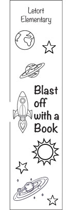
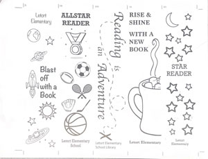

Bookmark Press Project |
|
| Home Photo Project Infographic Project Bookmark Press Project Video Production Project | |
|  |
The goal for this project was to design, print, and finish a custom bookmark for a local elementary school,Letort Elementary. First deciding on the design of a 2 in x 8 in space, we sketched it on paper then went into Adobe InDesign and "tranfered" it onto the computer. We also then had to get into groups of five to create what is shown below, a compiled group layout. After compiling we went it onto a printing plate from the black laser printer.
 |
| Home Photo Project Infographic Project Bookmark Press Project Video Production Project | |
|
©2024 Jocelyn Langer | |